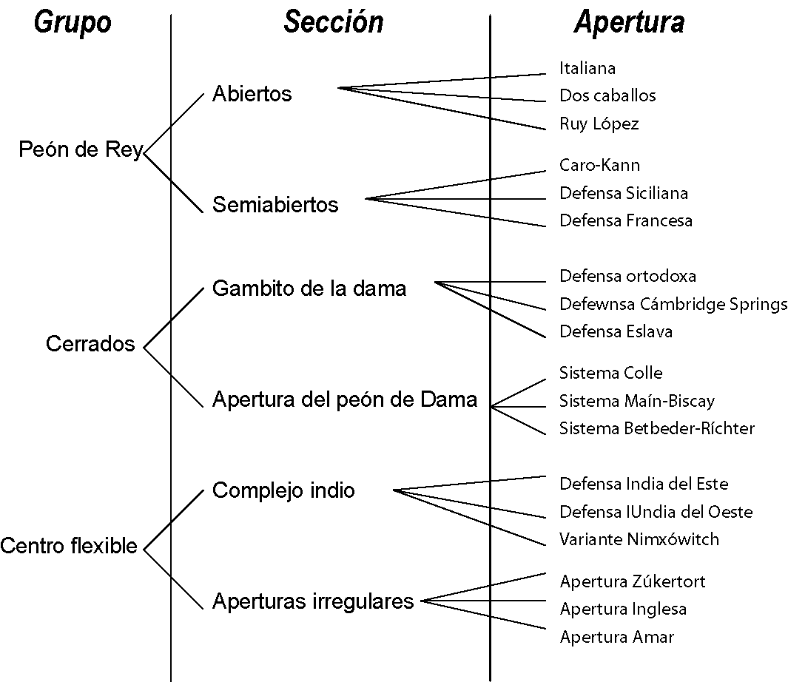
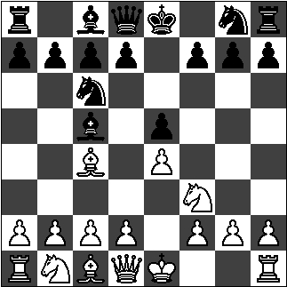
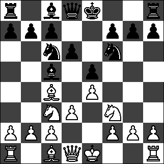

Aperturas
Se define como apertura como la serie predefinida de movimientos al inicio de la partida por parte del jugador blanco y del jugador negro con el propósito de tomar una posición ventajosa.
Las aperturas se clasifican según los primeros movimientos. La organización según el Dr. Savielly Tartakower consiste en tres grupos: "Peón de Rey", Cerrados y Centro flexible.

Apertura Italiana
Con el propósito de brindar un estudio de una apertura para jugadores principiantes se utilizará la apertura italiana por su sencillez.
- P4R, P4R
- C3AR, C3AD
- A4A, A4A

Giuoco Pianissimo
Esta variante de la apertura italiana es la mas sencilla, propone un control fuerte por ambos bandos del centro del tablero.
- P3D, C3AR
- C3AD, P3D
